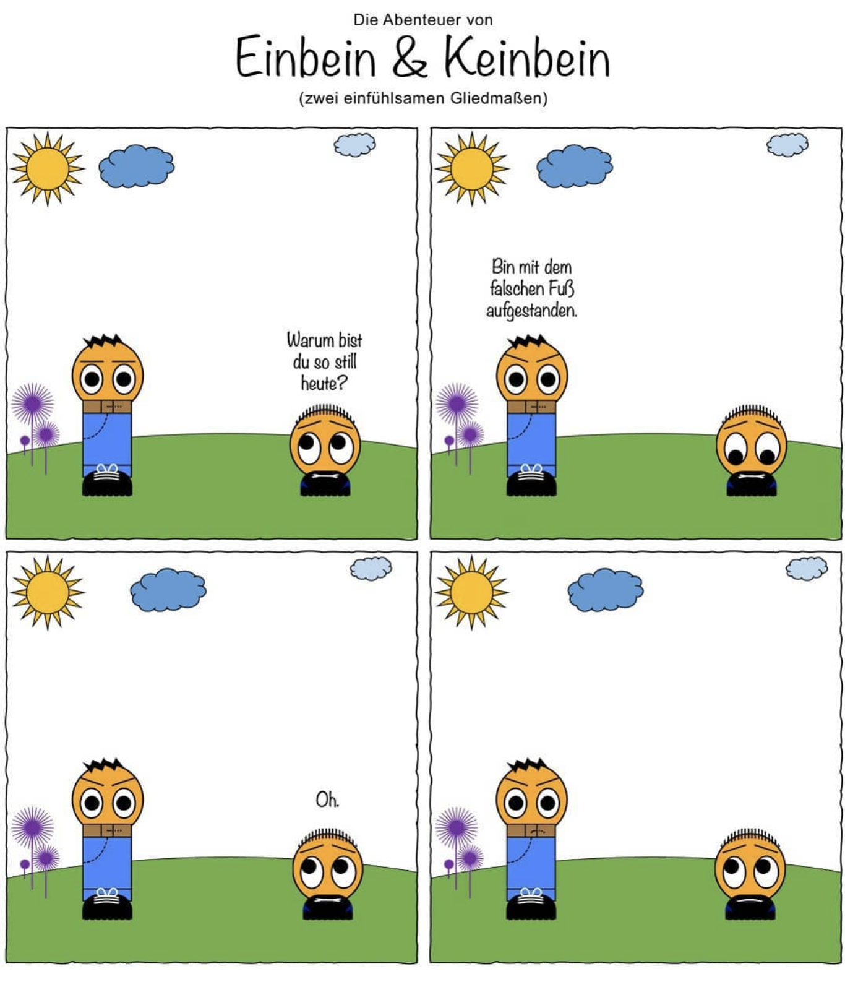

Neue Jahreszeit - Neue Kategorie. Heute: Die Unvollendeten.
Ich stampfe immer wieder irgendwelche Projekte aus dem fruchtbaren Boden meines wirren Geistes. Dann verliere ich mich in einer energiereichen Phase des initialen Enthusiasmus, nur um nach einer kurzen aber intensiven Phase der totalen Aufopferung das Ende der umgekehrten Glockenkurve zu erreichen: Das Projekt verschwindet hinter einem Schleier des Vergessens. Und fehlender Motivation.
Den Anfang macht: Das Instagram-Projekt “Beindruckend” - oder auch: Die Abenteuer von Einbein und Keinbein.
Die Idee? Absurde Web-Comics über ein kurzes und ein langes Bein. Dazu ein paar Dialoge mit… naja… Wortspielen und flachen Witzen.

Warum ist das Projekt eingeschlafen?
Ich habe den Aufwand massiv unterschätzt. Die Texte waren schnell ausgedacht, aber die Bilder habe ich in PowerPoint erzeugt.Und ich hatte den Anspruch, in jedem Bild Wert auf kleine Details zu legen. Eine Kettensäge die im Hintergrund über den Hügel fegt. Wald. Eine fliegende Ente und so weiter. Und dann kam das nächste Projekt, das meine ganze Aufmerksamkeit forderte. Und Beeindruckend verschwand in der Versenkung.
Zusammenfassung
Neue Jahreszeit - Neue Kategorie. Heute: Die Unvollendeten. Der Beitrag stellt das Instagram-Projekt 'Beeindruckend' vor, das absurde Web-Comics über ein kurzes und ein langes Bein präsentiert. Der Autor reflektiert über die Herausforderungen bei der Umsetzung des Projekts und die Gründe für dessen Einschlafen.
Hauptthemen: Kreativität Projekte Webcomics
Schwierigkeitsgrad: Einfach
Lesezeit: ca. 2 Minuten